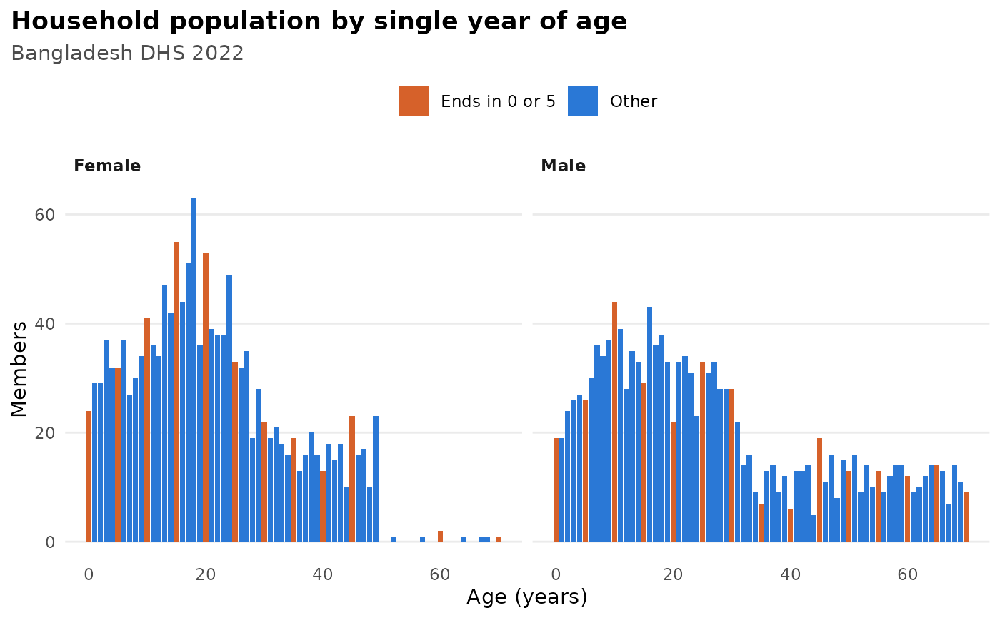

Draws the single-year age distribution of the household population (ages
ending in 0 or 5 highlighted) or the number of births by calendar year
(with the first year of the five-year window marked) from
bdhs_quality() results.
Examples
q <- bdhs_quality(bdhs_simulate(2022, "PR"), checks = "age_heaping")
plot(q)
